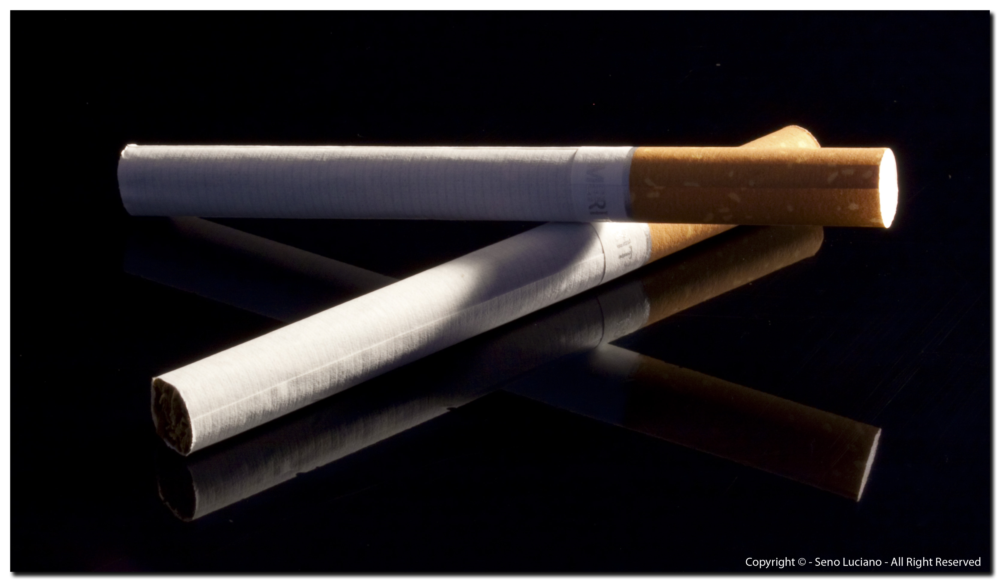

LA SIGARETTA
CHE COS'È ?

La sigaretta è un cilindro cartaceo contenente foglie di tabacco tritate e lavorate.
Non sempre o non solo avvolge il tabacco, può contenere altri prodotti vegetali:
- sostanze psicotrope come le infiorescenze di cannabis,
- chiodi di garofano come l'indonesiana,
- diverse spezie ed erbe aromatiche come menta e cannella.
La sigaretta è un oggetto di consumo molto diffuso,
nonostante i danni noti derivanti dalla dipendenza del fumo.
Il fumo di sigaretta è il metodo più comune di assunzione della nicotina (componente psicoattivo del tabacco).
Il fumo può essere di due tipi:
- attivo = di prima mano, cioè di chi fuma
- passivo = di seconda mano, cioè di chi "respira" il fumo.
HOME PAGE
LE MIGLIORI MARCHE
I DANNI DEL FUMO